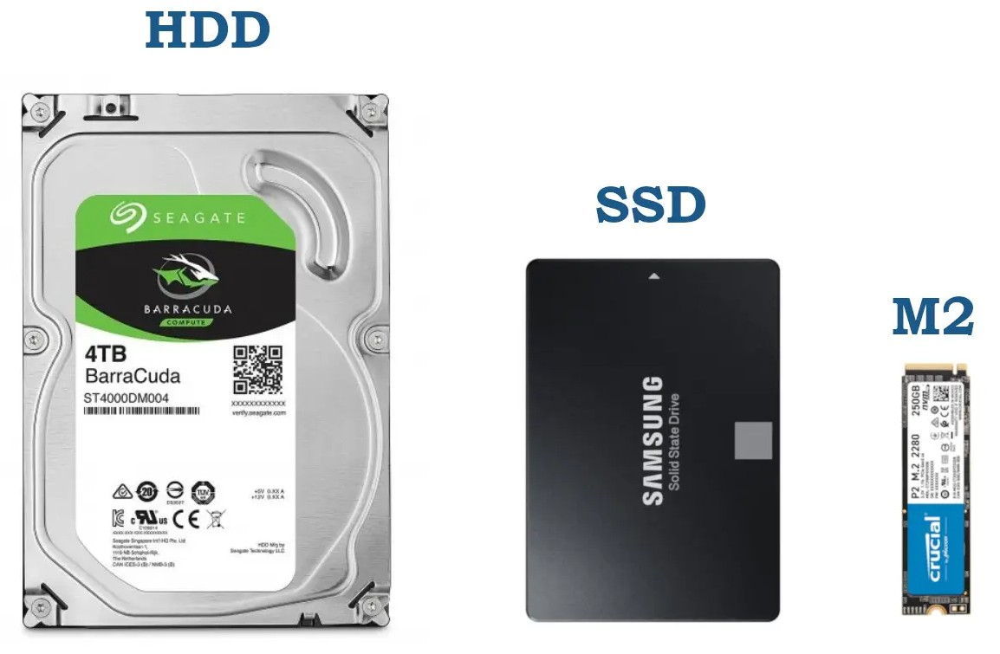
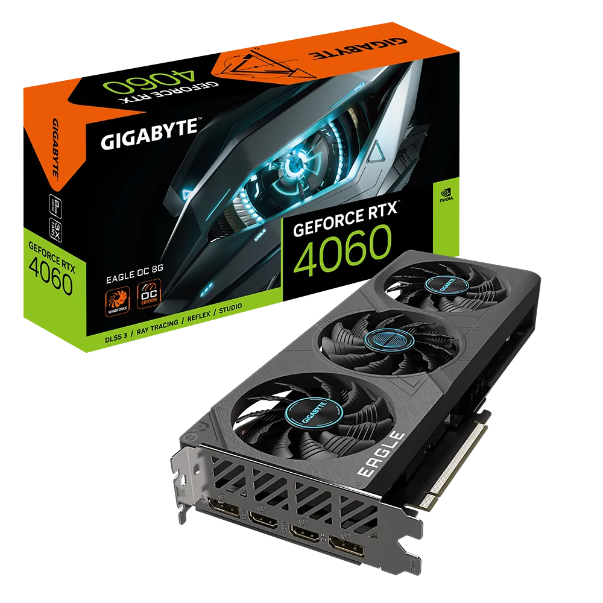

Modern Számítástechnika
Üdvözlünk a Modern Számítástechnika weboldalán!
Itt megismerheted az informatika legfontosabb területeit: hardverek, szoftverek, hálózatok.
Mik azok a hardver eszközök?
A számítógépes rendszerek két részből állnak, ezek együttesen járulnak hozzá a működéshez. A hardver a fizikai összetevő: a kézzel fogható tárgyak tartoznak ide, amelyek együttesen biztosítják a PC működését. Az angol “hard” szóból ered a kifejezés, amelynek jelentése: kemény, merev, szilárd. Tehát a hardver eszközök olyan részei a számítógépnek, amelyek láthatók, tapinthatók. Céljuk, hogy biztosítsák a szoftverek (soft=puha) futtatását. Több minden tartozik ide, belőlük áll össze a gép, a többségük cserélhető is, így amikor valaki egyéni igényekre szabott PC-t állít össze, jól megválogatja a hardver eszközöket.
Nézzük, melyek a legismertebb hardver eszközök, és melyiknek mi a célja!
- Alaplap: Ez a számítógép lelke, egy nagyon fontos eleme a PC-nek. Ez biztosítja ugyanis a kommunikációt a többi egység között. Tulajdonképpen egy többrétegű nyomtatott áramköri lapról van szó. Több csatlakoztató is található az alaplapon, többek közt a billentyűzetnek és egérnek, de USB-portokkal is fel van szerelve. Választáskor ezt is érdemes figyelembe venni.
- Processzor: CPU-nak is hívják, ez a központi adatfeldolgozó egység, sokan azt mondják rá: a számítógép agya. Minősége nagyban befolyásolja a gép működését. Két nagy processzorgyártó ismert manapság: az Intel és az AMD.
- Hűtő: A processzor hűtésére szolgál, hogy ne melegedjen túl. Ez lehet passzív (ventilátor nélküli) és aktív (ventilátorral rendelkező).
- Memória: Két fajtája van. Az egyik a RAM, amely a közvetlen hozzáférésű memória, írható és olvasható. Mindig az aktuális programot tárolja. Ha kikapcsoljuk a gépet, akkor törlődik a tartalma. A memória kiválasztásánál számít, mekkora a kapacitása. Ez az hardver eszköz bővíthető, így ha gyorsabb gépet szeretnél, van mód másikat beépíteni.
További fontos hardver eszközök
Háttértárak: Meg kell említeni a háttértárakat, amelyeken az adatok hosszú távú tárolása történik (SSD, HDD)
Videokártya: Ez a hardver eszköz felelős a grafikai megjelenítésért. A processzorhoz hasonlóan ez is bővíthető, így ha valaki játékra szeretné használni a gépet, érdemes egy erősebb videokártyát választani.
A perifériákról is essen szó!
Ezek olyan hardver eszközök, amelyek a számítógéphez külsőleg csatlakoztathatók, a többségük nélkül nem is tudnánk dolgozni a PC-n. Két fajtájukat különböztetjük meg: a bemeneti és a kimeneti.
Bemeneti perifériák: Ezek azok az eszközök, amelyek a felhasználó által megadott adatokat továbbítják a számítógépnek. Ilyenek például a billentyűzetek, egerek, mikrofonok.
Kimeneti perifériák: Ezek azok az eszközök, amelyek a számítógép által feldolgozott adatokat visszajuttatják a felhasználónak. Ilyenek például a monitorok, nyomtatók, hangszórók.
Számítógép eladások.
Pl.: 2024 első negyedévében 1,5 százalékkal nőttek a számítógép eladások, így majd 60 millió notebookot és asztali gépet vásároltak, amire legutóbb 2019-ben volt példa.
| Gyártó | Eladás % | Eladás Db |
|---|---|---|
| Lenovo | 23% | 13,754 Millió |
| HP Inc | 20,1 % | 12,0198 Millió |
| Dell Technologies | 15,5 % | 9,269 Millió |
| Apple | 8,1 % | 4,8438 Millió |
| Acer Group | 6,2% | 3,7076 Millió |
| ASUS | 6,1 % | 3,6478 Millió |
| Többi piaci szereplő | 21 % | 59,8 Millió |